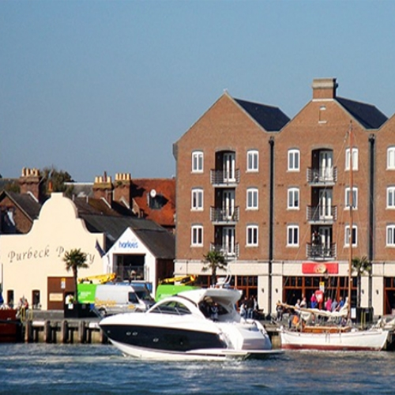

Askell Brian Peter (1933 - 2009)
Poole


Hello, my name is Brian and I am a an_Engineer. I was born in 1933 in Poole.
 Ref. No. 4
Ref. No. 4
1 step back
Index by Surnames
Index by profession
Index by years
Index by location
guided Tours
Structure
Predecessors
Geography
Slide show
Documents
Family pictures
Wechsle zu Deutsch
Play / Stop
Play / Stop
Askell Brian was born in the zodiac sign of Scorpio on a Tuesday, the 31.10.1933 in Poole. Poole is a seaside town on the southern coast of England and you may look at some photos here.
He married at the age of 37 years in the year 1970 in Poole Andrews Patricia Sylvia -, 14 years younger -, a_proprietor of care home, born in 1948 from Poole. He was an_Engineer and the couple lived in Poole. They had 2 children: Jonathan Frank, born in 1971 and Marcus, born in 1976.
He died at the age of 75 years on a Tuesday, the 13.01.2009 in Poole of heart disease. Mourning were amongst others his wife Patricia, his sons Jonathan and Marcus, his grandchildren Samuel and Charlie, his daughter in law Martina.
He lived in the epoch of modern times . Some of his contemporaries of a similar age are Andy Warhol, Che Guevara and Martin Luther King. During his life there were many wars, amongst them the Second World war, the Korean war and the Vietnam war. Amongst important discoveries and inventions during his time are trains on magnetic rails, the contraceptive pill, the chip card and the air bag.